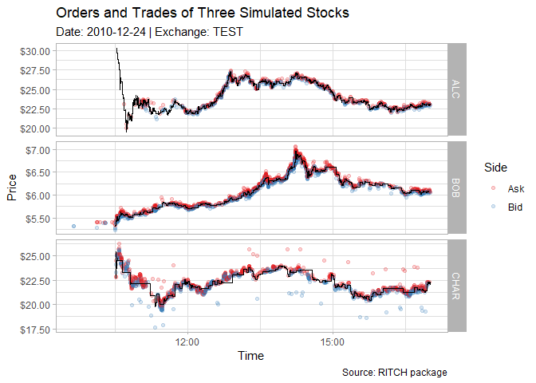

The RITCH library provides an R interface to NASDAQs ITCH protocol, which is used to distribute financial messages to participants. Messages include orders, trades, market status, and much more financial information. A full list of messages is shown later. The main purpose of this package is to parse the binary ITCH files to a data.table in R.
The package leverages Rcpp and C++ for efficient message parsing.
Note that the package provides a small simulated sample dataset in the ITCH_50 format for testing and example purposes. Helper functions are provided to list and download sample files from NASDAQs official server.
Install
To install RITCH you can use the following
# stable version:
install.packages("RITCH")
# development version:
# install.packages("remotes")
remotes::install_github("DavZim/RITCH")Quick Overview
The main functions of RITCH are read-related and are easily identified by their read_ prefix.
Due to the inherent structural differences between message classes, each class has its own read function. A list of message types and the respective classes are provided later in this Readme.
Example message classes used in this example are orders and trades. First we define the file to load and count the messages, then we read in the orders and the first 100 trades
library(RITCH)
# use built in example dataset
file <- system.file("extdata", "ex20101224.TEST_ITCH_50", package = "RITCH")
# count the number of messages in the file
msg_count <- count_messages(file)
#> [Counting] 12,012 total messages found
#> [Converting] to data.table
#> [Done] in 0.01 secs at 87.25MB/s
dim(msg_count)
#> [1] 22 2
names(msg_count)
#> [1] "msg_type" "count"
# read the orders into a data.table
orders <- read_orders(file)
#> [Counting] num messages 12,012
#> [Counting] num 'orders' messages 5,000
#> [Converting] to data.table
#> [Done] in 0.09 secs at 5.05MB/s
dim(orders)
#> [1] 5000 13
names(orders)
#> [1] "msg_type" "stock_locate" "tracking_number" "timestamp" "order_ref" "buy"
#> [7] "shares" "stock" "price" "mpid" "date" "datetime"
#> [13] "exchange"
# read the first 100 trades
trades <- read_trades(file, n_max = 100)
#> [Note] n_max overrides counting the messages. Number of messages may be off
#> [Filter] skip: 0 n_max: 100 (1 - 100)
#> [Counting] num 'trades' messages 300
#> [Converting] to data.table
#> [Done] in 0.06 secs at 7.74MB/s
dim(trades)
#> [1] 100 14
names(trades)
#> [1] "msg_type" "stock_locate" "tracking_number" "timestamp" "order_ref" "buy"
#> [7] "shares" "stock" "price" "match_number" "cross_type" "date"
#> [13] "datetime" "exchange"Note that the file can be a plain ITCH_50 file or a gzipped ITCH_50.gz file, which will be decompressed to the current directory. You may also note that the output reports quite a low read speed in the MB/s. This lowish number is due to including the parsing process, furthermore, due to overhead of setup code, this number gets higher on larger files.
If you want to know more about the functions of the package, read on.
Main Functions
RITCH provides the following main functions:
-
read_itch(file, ...)to read an ITCH file Convenient wrappers for different message classes such asorders,trades, etc are also provided asread_orders(),read_trades(), … -
filter_itch(infile, outfile, ...)to filter an ITCH file and write directly to another file without loading the data into R -
write_itch(data, file, ...)to write a dataset to an ITCH file
There are also some helper functions provided, a selection is:
-
download_sample_file(choice)to download a sample file from the NASDAQ server andlist_sample_files()to get a list of all available sample files -
download_stock_directory(exchange, date)to download the stock locate information for a given exchange and date -
open_itch_sample_server()to open the official NASDAQ server in your browser, which hosts among other things example data files -
gzip_file(infile, outfile)andgunzip_file(infile, outfile)for gzip functionality -
open_itch_specification()to open the official NASDAQ ITCH specification PDF in your browser
Writing ITCH Files
RITCH also provides functionality for writing ITCH files. Although it could be stored in other file formats (for example a database or a qs file), ITCH files are quite optimized regarding size as well as write/read speeds. Thus the write_itch() function allows you to write a single or multiple types of message to an ITCH_50 file. Note however, that only the standard columns are supported. Additional columns will not be written to file!
Additional information can be saved in the filename. By default the date, exchange, and fileformat information is added to the filename unless you specify add_meta = FALSE, in which case the given name is used.
As a last note: if you write your data to an ITCH file and want to filter for stocks later on, make sure to save the stock directory of that day/exchange, either externally or in the ITCH file directly (see example below).
Simple Write Example
A simple write example would be to read all modifications from an ITCH file and save it to a separate file to save space, reduce read times later on, etc.
file <- system.file("extdata", "ex20101224.TEST_ITCH_50", package = "RITCH")
md <- read_modifications(file, quiet = TRUE)
dim(md)
#> [1] 2000 13
names(md)
#> [1] "msg_type" "stock_locate" "tracking_number" "timestamp" "order_ref" "shares"
#> [7] "match_number" "printable" "price" "new_order_ref" "date" "datetime"
#> [13] "exchange"
outfile <- write_itch(md, "modifications", compress = TRUE)
#> [Counting] 2,000 messages (44,748 bytes) found
#> [Converting] to binary .
#> [Writing] to file
#> [Outfile] 'modifications_20101224.TEST_ITCH_50.gz'
#> [Done] in 0.01 secs at 1.94MB/s
# compare file sizes
files <- c(full_file = file, subset_file = outfile)
format_bytes(sapply(files, file.size))
#> full_file subset_file
#> "465.05KB" "23.95KB"Comprehensive Write Example
A typical work flow would look like this:
- read in some message classes from file and filter for certain stocks
- save the results for later analysis, also compress to save disk space
## Read in the different message classes
file <- system.file("extdata", "ex20101224.TEST_ITCH_50", package = "RITCH")
# read in the different message types
data <- read_itch(file,
c("system_events", "stock_directory", "orders"),
filter_stock_locate = c(1, 3),
quiet = TRUE)
str(data, max.level = 1)
#> List of 2
#> $ stock_directory:Classes 'data.table' and 'data.frame': 2 obs. of 21 variables:
#> ..- attr(*, ".internal.selfref")=<externalptr>
#> $ orders :Classes 'data.table' and 'data.frame': 2518 obs. of 13 variables:
#> ..- attr(*, ".internal.selfref")=<externalptr>
## Write the different message classes
outfile <- write_itch(data,
"alc_char_subset",
compress = TRUE)
#> [Counting] 2,520 messages (95,766 bytes) found
#> [Converting] to binary .
#> [Writing] to file
#> [Outfile] 'alc_char_subset_20101224.TEST_ITCH_50.gz'
#> [Done] in 0.02 secs at 2.28MB/s
outfile
#> [1] "alc_char_subset_20101224.TEST_ITCH_50.gz"
# compare file sizes
format_bytes(
sapply(c(full_file = file, subset_file = outfile),
file.size)
)
#> full_file subset_file
#> "465.05KB" "37.89KB"
## Lastly, compare the two datasets to see if they are identical
data2 <- read_itch(outfile, quiet = TRUE)
all.equal(data, data2)
#> [1] TRUEFor comparison, the same format in the qs format results in 44788 bytes.
ITCH Messages
There are a total of 22 different message types which are grouped into 13 classes by RITCH.
The messages and their respective classes are:
| Type |
RITCH Class |
RITCH Read Function |
ITCH Name | ITCH Spec Section |
|---|---|---|---|---|
S |
system_events | read_system_events() |
System Event Message | 4.1 |
R |
stock_directory | read_stock_directory() |
Stock Directory | 4.2.1 |
H |
trading_status | read_trading_status() |
Stock Trading Action | 4.2.2 |
Y |
reg_sho | read_reg_sho() |
Reg SHO Restriction | 4.2.3 |
L |
market_participant_states | read_market_participant_states() |
Market Participant Position | 4.2.4 |
V |
mwcb | read_mwcb() |
MWCB Decline Level Message | 4.2.5.1 |
W |
mwcb | read_mwcb() |
MWCB Status Message | 4.2.5.2 |
K |
ipo | read_ipo() |
IPO Quoting Period Update | 4.2.6 |
J |
luld | read_luld() |
LULD Auction Collar | 4.2.7 |
h |
trading_status | read_trading_status() |
Operational Halt | 4.2.8 |
A |
orders | read_orders() |
Add Order Message | 4.3.1 |
F |
orders | read_orders() |
Add Order - MPID Attribution Message | 4.3.2 |
E |
modifications | read_modifications() |
Order Executed Message | 4.4.1 |
C |
modifications | read_modifications() |
Order Executed Message With Price Message | 4.4.2 |
X |
modifications | read_modifications() |
Order Cancel Message | 4.4.3 |
D |
modifications | read_modifications() |
Order Delete Message | 4.4.4 |
U |
modifications | read_modifications() |
Order Replace Message | 4.4.5 |
P |
trades | read_trades() |
Trade Message (Non-Cross) | 4.5.1 |
Q |
trades | read_trades() |
Cross Trade Message | 4.5.2 |
B |
trades | read_trades() |
Broken Trade Message | 4.5.3 |
I |
noii | read_noii() |
NOII Message | 4.6 |
N |
rpii | read_rpii() |
Retail Interest Message | 4.7 |
Note that if you are interested in the exact definition of the messages and its components, you should look into the official ITCH specification, which can also be opened by calling open_itch_specification().
Data
The RITCH package provides a small, artificial dataset in the ITCH format for example and test purposes. To learn more about the dataset check ?ex20101224.TEST_ITCH_50.
To access the dataset use:
file <- system.file("extdata", "ex20101224.TEST_ITCH_50", package = "RITCH")
count_messages(file, add_meta_data = TRUE, quiet = TRUE)
#> msg_type count msg_class msg_name doc_nr
#> 1: S 6 system_events System Event Message 4.1
#> 2: R 3 stock_directory Stock Directory 4.2.1
#> 3: H 3 trading_status Stock Trading Action 4.2.2
#> 4: Y 0 reg_sho Reg SHO Restriction 4.2.3
#> 5: L 0 market_participant_states Market Participant Position 4.2.4
#> 6: V 0 mwcb MWCB Decline Level Message 4.2.5.1
#> 7: W 0 mwcb MWCB Status Message 4.2.5.2
#> 8: K 0 ipo IPO Quoting Period Update 4.2.6
#> 9: J 0 luld LULD Auction Collar 4.2.7
#> 10: h 0 trading_status Operational Halt 4.2.8
#> 11: A 4997 orders Add Order Message 4.3.1
#> 12: F 3 orders Add Order - MPID Attribution Message 4.3.2
#> 13: E 198 modifications Order Executed Message 4.4.1
#> 14: C 0 modifications Order Executed Message With Price Message 4.4.2
#> 15: X 45 modifications Order Cancel Message 4.4.3
#> 16: D 1745 modifications Order Delete Message 4.4.4
#> 17: U 12 modifications Order Replace Message 4.4.5
#> 18: P 5000 trades Trade Message (Non-Cross) 4.5.1
#> 19: Q 0 trades Cross Trade Message 4.5.2
#> 20: B 0 trades Broken Trade Message 4.5.3
#> 21: I 0 noii NOII Message 4.6
#> 22: N 0 rpii Retail Interest Message 4.7
#> msg_type count msg_class msg_name doc_nrNote that the example dataset does not contain messages from all classes but is limited to 6 system messages, 3 stock directory, 3 stock trading action, 5000 trade, 5000 order, and 2000 order modification messages. As seen by the 3 stock directory messages, the file contains data about 3 made up stocks (see also the plot later in the Readme).
MASDAQ provides sample ITCH files on their official server at https://emi.nasdaq.com/ITCH/Nasdaq%20ITCH/ (or in R use open_itch_sample_server()) which can be used to test code on larger datasets. Note that the sample files are up to 5GB compressed, which inflate to about 13GB. To interact with the sample files, use list_sample_files() and download_sample_files().
Notes on Memory and Speed
There are some tweaks available to deal with memory and speed issues. For faster reading speeds, you can increase the buffer size of the read_ functions to something around 1 GB or more (buffer_size = 1e9).
Provide Message Counts
If you have to read from a single file multiple times, for example because you want to extract orders and trades, you can count the messages beforehand and provide it to each read’s n_max argument, reducing the need to pass the file for counting the number of messages.
# count messages once
n_msgs <- count_messages(file, quiet = TRUE)
# use counted messages multiple times, saving file passes
orders <- read_orders(file, quiet = TRUE, n_max = n_msgs)
trades <- read_trades(file, quiet = TRUE, n_max = n_msgs)Batch Read
If the dataset does not fit entirely into RAM, you can do a partial read specifying skip and n_max, similar to this:
file <- system.file("extdata", "ex20101224.TEST_ITCH_50", package = "RITCH")
n_messages <- count_orders(count_messages(file, quiet = TRUE))
n_messages
#> [1] 5000
# read 1000 messages at a time
n_batch <- 1000
n_parsed <- 0
while (n_parsed < n_messages) {
cat(sprintf("Parsing Batch %04i - %04i", n_parsed, n_parsed + n_batch))
# read in a batch
df <- read_orders(file, quiet = TRUE, skip = n_parsed, n_max = n_batch)
cat(sprintf(": with %04i orders\n", nrow(df)))
# use the data
# ...
n_parsed <- n_parsed + n_batch
}
#> Parsing Batch 0000 - 1000: with 1000 orders
#> Parsing Batch 1000 - 2000: with 1000 orders
#> Parsing Batch 2000 - 3000: with 1000 orders
#> Parsing Batch 3000 - 4000: with 1000 orders
#> Parsing Batch 4000 - 5000: with 1000 ordersFilter when Reading Data
You can also filter a dataset directly while reading messages for msg_type, stock_locate, timestamp range, as well as stock. Note that filtering for a specific stock, is just a shorthand lookup for the stocks’ stock_locate code, therefore a stock_directory needs to be supplied (either by providing the output from read_stock_directory() or download_stock_locate()) or the function will try to extract the stock directory from the file (might take some time depending on the size of the file).
# read in the stock directory as we filter for stock names later on
sdir <- read_stock_directory(file, quiet = TRUE)
od <- read_orders(
file,
filter_msg_type = "A", # take only 'No MPID add orders'
min_timestamp = 43200000000000, # start at 12:00:00.000000
max_timestamp = 55800000000000, # end at 15:30:00.000000
filter_stock_locate = 1, # take only stock with code 1
filter_stock = "CHAR", # but also take stock CHAR
stock_directory = sdir # provide the stock_directory to match stock names to stock_locates
)
#> [Filter] msg_type: 'A'
#> [Filter] timestamp: 43200000000000 - 55800000000000
#> [Filter] stock_locate: '1', '3'
#> NOTE: as filter arguments were given, the number of messages may be off
#> [Counting] num messages 12,012
#> [Counting] num 'orders' messages 5,000
#> [Converting] to data.table
#> [Done] in 0.07 secs at 6.71MB/s
# count the different message types
od[, .(n = .N), by = msg_type]
#> msg_type n
#> 1: A 1082
# see if the timestamp is in the specified range
range(od$timestamp)
#> integer64
#> [1] 43235810473334 55792143963723
# count the stock/stock-locate codes
od[, .(n = .N), by = .(stock_locate, stock)]
#> stock_locate stock n
#> 1: 3 CHAR 574
#> 2: 1 ALC 508Filter Data to File
On larger files, reading the data into memory might not be the best idea, especially if only a small subset is actually needed. In this case, the filter_itch function will come in handy.
The basic design is identical to the read_itch function but instead of reading the messages into memory, they are immediately written to a file.
Taking the filter data example from above, we can do the following
# the function returns the final name of the output file
outfile <- filter_itch(
infile = file,
outfile = "filtered",
filter_msg_type = "A", # take only 'No MPID add orders'
min_timestamp = 43200000000000, # start at 12:00:00.000000
max_timestamp = 55800000000000, # end at 15:30:00.000000
filter_stock_locate = 1, # take only stock with code 1
filter_stock = "CHAR", # but also take stock CHAR
stock_directory = sdir # provide the stock_directory to match stock names to stock_locates
)
#> [Filter] msg_type: 'A'
#> [Filter] timestamp: 43200000000000 - 55800000000000
#> [Filter] stock_locate: '1', '3'
#> [Bytes] scanned 465048, filtered 41116
#> [Messages] scanned 10979, filtered 1082
#> [Done] in 0.06 secs at 7.34MB/s
format_bytes(file.size(outfile))
#> [1] "41.12KB"
# read in the orders from the filtered file
od2 <- read_orders(outfile)
#> [Counting] num messages 1,082
#> [Counting] num 'orders' messages 1,082
#> [Converting] to data.table
#> [Done] in 0.07 secs at 592.53KB/s
# check that the filtered dataset contains the same information as in the example above
all.equal(od, od2)
#> [1] TRUECreate a Plot with Trades and Orders of the largest ETFs
As a last step, a quick visualization of the example dataset
library(ggplot2)
#> Warning: Paket 'ggplot2' wurde unter R Version 4.2.2 erstellt
file <- system.file("extdata", "ex20101224.TEST_ITCH_50", package = "RITCH")
# load the data
orders <- read_orders(file, quiet = TRUE)
trades <- read_trades(file, quiet = TRUE)
# replace the buy-factor with something more useful
orders[, buy := ifelse(buy, "Bid", "Ask")]
ggplot() +
geom_point(data = orders,
aes(x = as.POSIXct(datetime), y = price, color = buy), alpha = 0.2) +
geom_step(data = trades, aes(x = as.POSIXct(datetime), y = price), size = 0.2) +
facet_grid(stock~., scales = "free_y") +
theme_light() +
labs(title = "Orders and Trades of Three Simulated Stocks",
subtitle = "Date: 2010-12-24 | Exchange: TEST",
caption = "Source: RITCH package", x = "Time", y = "Price", color = "Side") +
scale_y_continuous(labels = scales::dollar) +
scale_color_brewer(palette = "Set1")
#> Warning: Using `size` aesthetic for lines was deprecated in ggplot2 3.4.0.
#> ℹ Please use `linewidth` instead.
Other Notes
If you find this package useful or have any other kind of feedback, I’d be happy if you let me know. Otherwise, if you need more functionality, please feel free to create an issue or a pull request.
Citation and CRAN release are WIP.
If you are interested in gaining a better understanding of the internal data structures, converting data to and from binary, have a look at the debug folder and its contents (only available on the RITCH’s Github page).